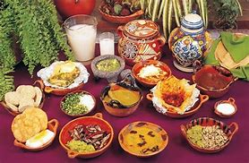

Gastronomia
- Tlatlapas
Sopa espesa a base de frijoles molidos, chile y epazote. Se acompaña con tortillas o tlacoyos. - Tamal de espiga
Tamal alargado hecho de maíz, envuelto en hoja de milpa y cocido al vapor. Se sirve con salsa o chile. - Mixiotes
Carne marinada (borrego o pollo) envuelta en papel de mixiote y cocida al vapor o al horno. - Mole prieto
Mole espeso de chile mulato, ajo, cebolla y especias con carne de cerdo. Muy tradicional en festividades. - Escamoles
Huevecillos de hormiga cocinados con mantequilla, epazote y ajo. Se sirven en tacos o como guarnición. - Chinicuiles
Gusanos rojos del maguey, ricos en proteína, asados o fritos y acompañados con salsa y tortillas. - Barbacoa de hoyo
Carne de borrego cocinada en un hoyo con piedras calientes y pencas de maguey. Se acompaña de consomé. - Tlacoyos
Masa de maíz rellena de frijol, requesón o habas, cocida al comal y servida con nopales, salsa y queso. - Tortillas ceremoniales
Tortillas decoradas con figuras religiosas o florales, hechas con pigmentos naturales. Usadas en ofrendas. - Pulque
Bebida fermentada del maguey, natural o curada con frutas. Muy tradicional en la región. - Atole agrio
Atole fermentado con masa de maíz, de sabor ligeramente ácido. Se toma caliente. - Tepache de maíz o piña
Bebida fermentada refrescante, hecha con maíz o cáscaras de piña, común en zonas rurales.